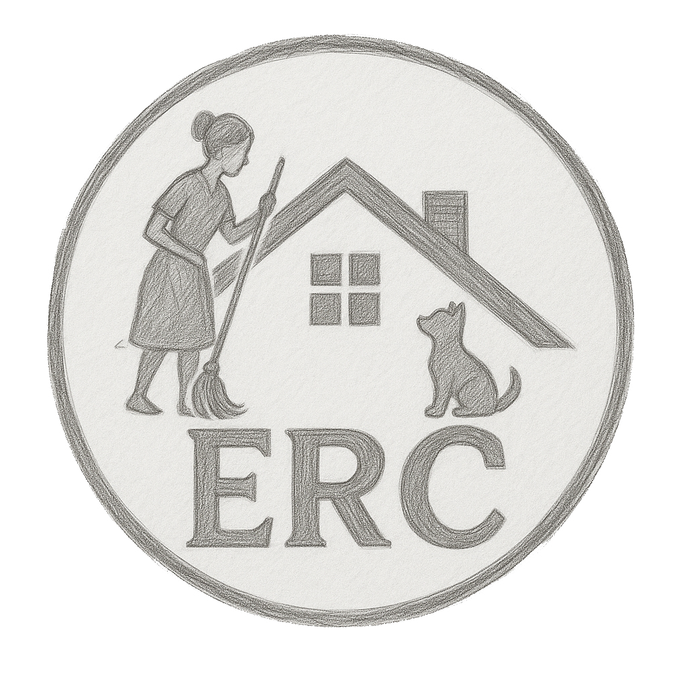
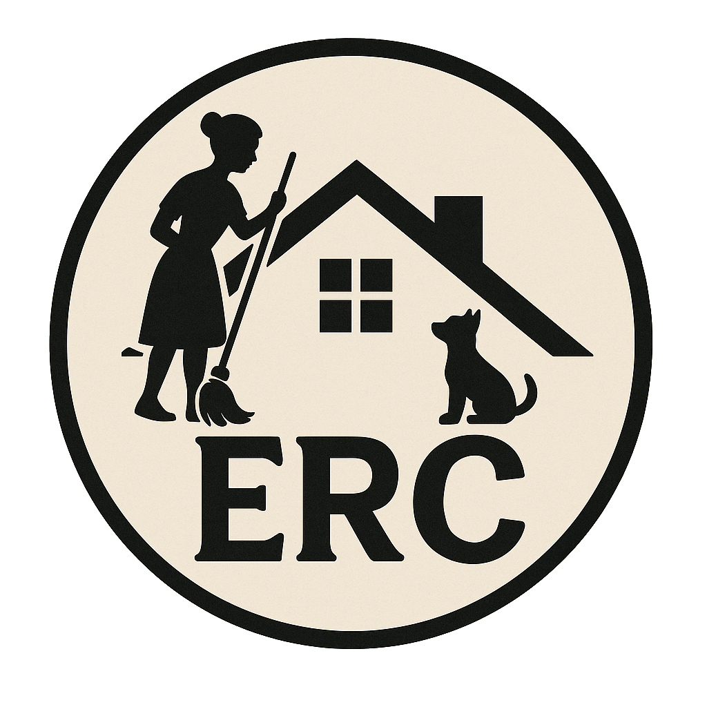
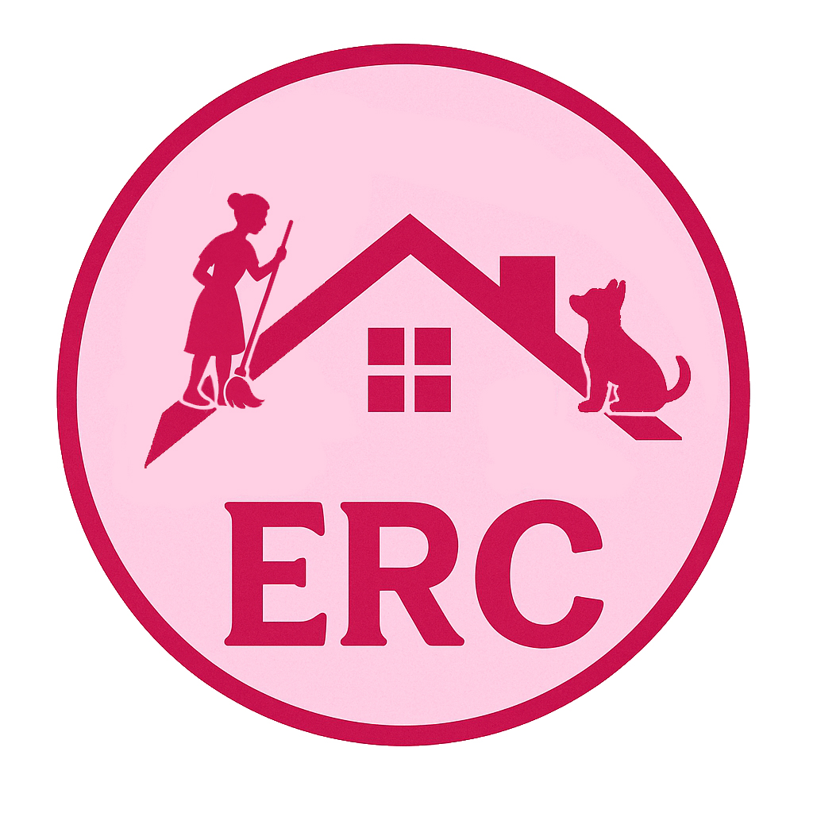
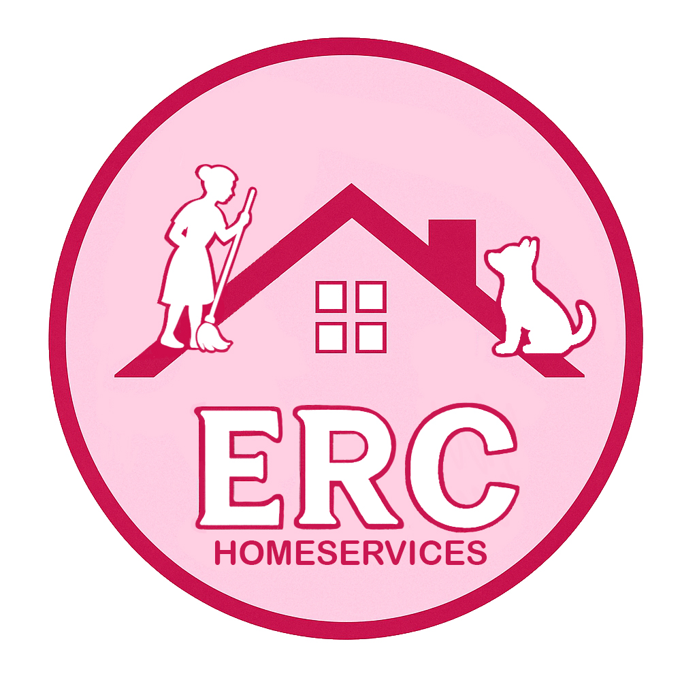
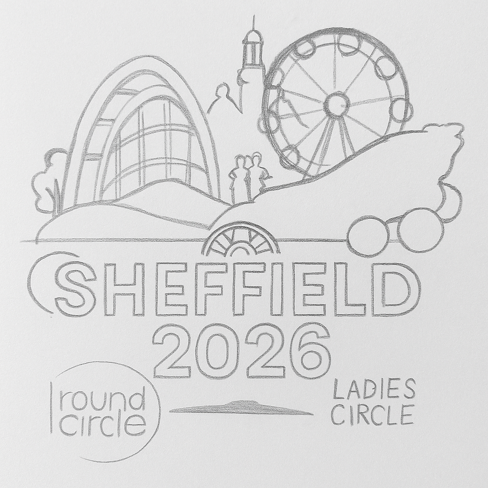
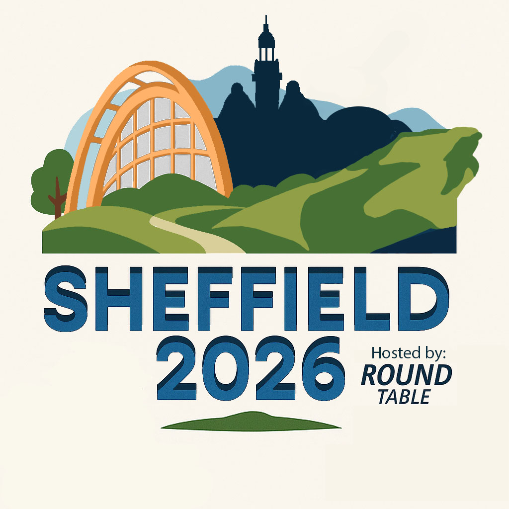
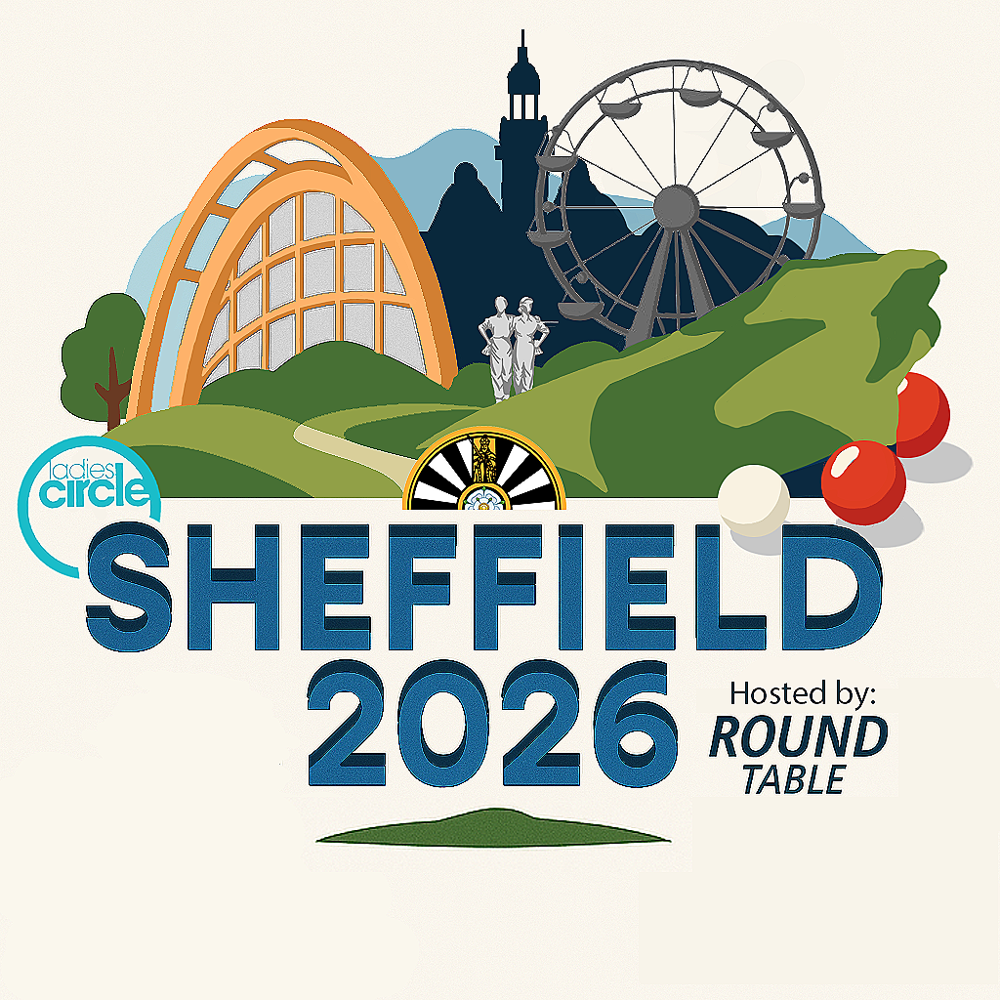
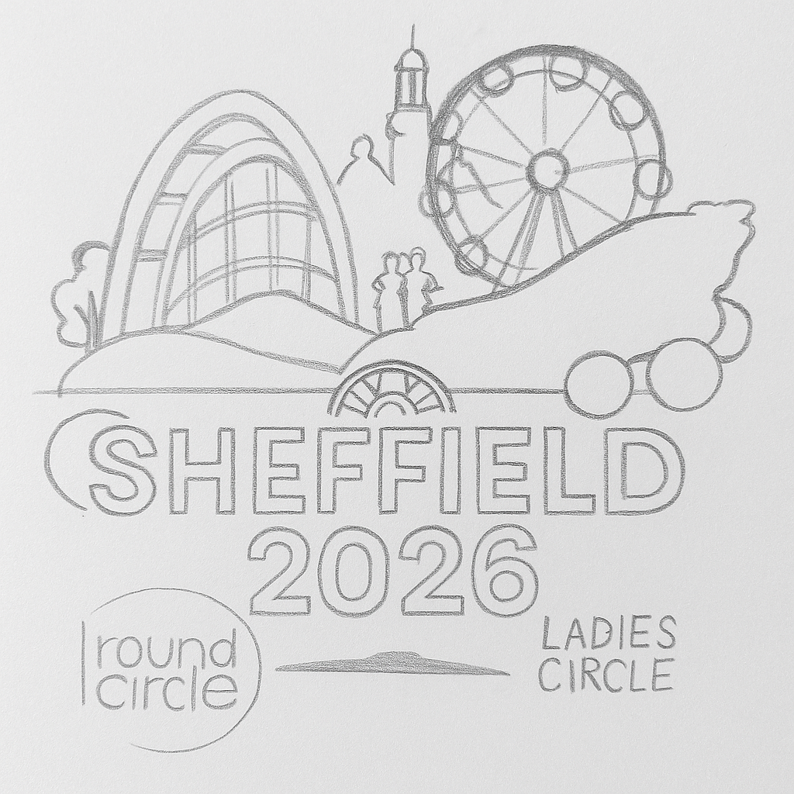
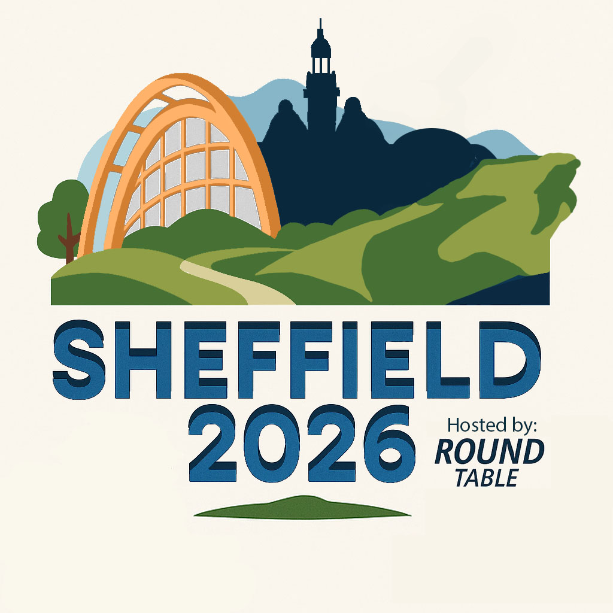
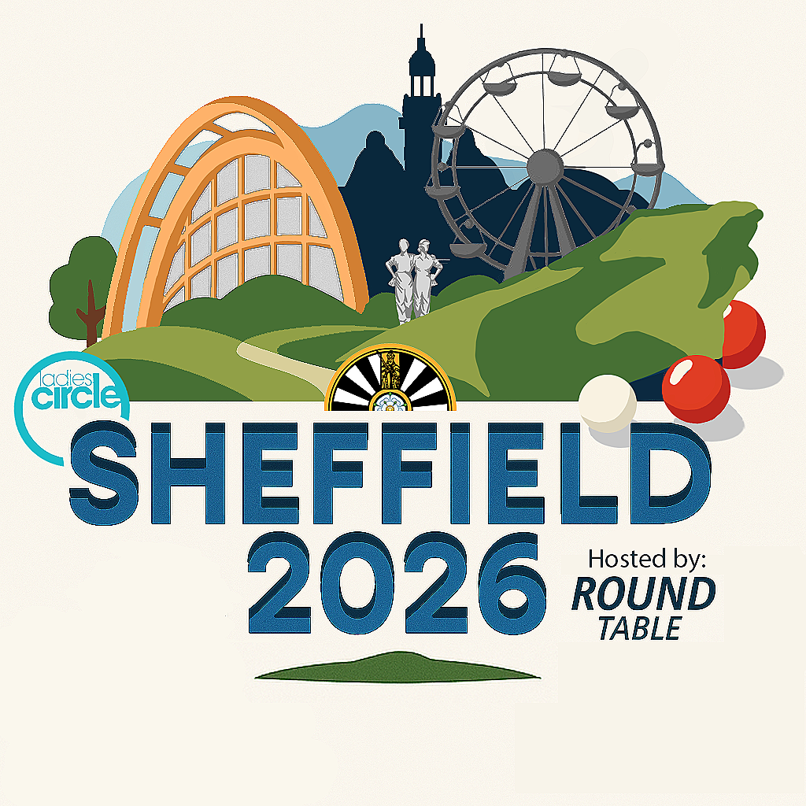

back to main page
year 1 projects
LOGOS
The logos displayed here where done for verious clients the first for a local scaffolding company, the next my personal pending university society,the next being for a local houskeeping company, the last 2 being creative exersise's for my university the first being a concept for the upcoming "Sheffield 2026 confrence", and the last being a exersise creating a logo for a non existant games company.


This logo perfectly reflects Joy Scaffolding—strong, bright, and full of energy. The yellow scaffolding and sunburst give off a sense of progress and positivity, while the birds add a feeling of freedom, The bold “JOY” says it all: solid work, done with happiness and purpose.


This logo perfectly sums up what the Cocktail and Beer Society at the University of Winchester is all about—enjoying great drinks and better company while keeping things stylish. The splash of cocktails and beer shows our fun side, but the elegant design reflects the classy, welcoming vibe we bring to campus socials and events.
 
 
This logo reflects my client’s passion for housekeeping, her love for dogs, and her feminine style. I used the image of a woman with a mop to represent care and hands-on service, with a house to clearly show the focus on home care. The dog adds a personal, warm touch. I chose pink tones to highlight her femininity and make the design feel welcoming. Including “HOMESERVICES” makes the purpose clear. Altogether, it’s a simple, strong logo that blends professionalism with personality.
  

 

This logo for “Sheffield 2026,” hosted by the Round Table and Ladies Circle, includes loads of visuals that represent the city and what the event is all about. There’s a big orange arch that might be based on the Winter Garden or the train station roof, and a Ferris wheel that makes it feel like a celebration.
The green hills are probably a nod to the Peak District, which is super close to Sheffield and makes it known for being really green. The snooker balls are a fun detail too, since Sheffield’s famous for hosting the World Snooker Championship.
There’s also a statue in the middle that is a low fidelity version of the iconic women of steel statue, to represent fairness and togetherness—stuff that the Ladies Circle and Round Table are all about. The text is bold and modern, making it look fresh and future-focused.
By including the logos for both host groups, the design makes it clear that this event is about bringing people together. Overall, it shows Sheffield as a fun, welcoming, and proud city.

As i had no client for this project the whole design was up to my interpretaion i took from the name and designed a steath themed logo with a ninja protruding from the logo and a simplistic monochromatic design.